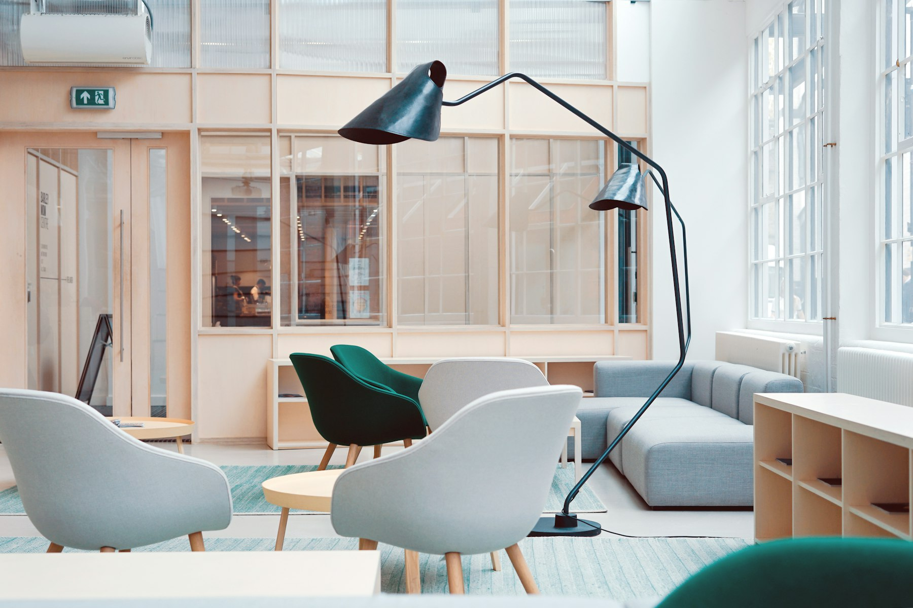

Last Light, Wheat Country

Morning Fog, Cascades

The Cabin at Dawn

Cathedral of Pines

River Bend, Spring

Edge of the World

The Long Way Home

Backlit

Reflections, Still Morning

Patchwork

Into the Woods

Hidden Falls

Silence

By the Window

Soft Hour

October Road
